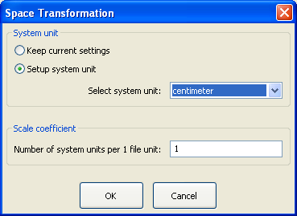
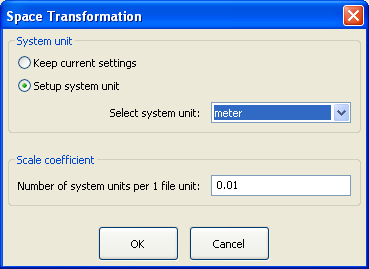

1. When you are importing a file you can setup unit of length what you want to use for editing. To do it, click the "Scale" button (see the picture below) and change system unit and scale value (see the second picture).

The scale value is a number of system units of length per 1 file unit. In good .3ds and .asc files coordinates and distances are written in centimeters , therefore file unit is centimeter. If you change system unit the scale value will be changed automatically. For example, if you want to edit a model in meters, change system unit to "meter", and scale will be equal to 0.01 (0.01 is a number of meters in one centimeter).

2. When you are exporting a file you can setup scale value which will be used for writing the file. To do it, click the "Scale" button and change scale value. The scale value is a number of file units of length per 1 system unit. For example, if you measure distances in meters when you are editing your model you have to set the scale value to 100 (100 is a number of centimeters ("file units") in one meter).